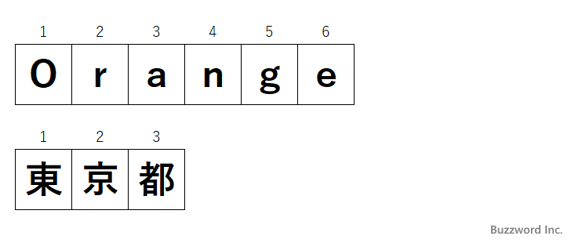

- Home ›
- JavaScript入門 ›
- 文字列
文字列の長さを取得する(length)
String オブジェクトの length プロパティは、文字列の文字の個数を返します。ただし文字によっては 1 文字で 2 を返す文字があるので注意が必要です。ここでは String オブジェクトの length プロパティの使い方について解説します。
文字列の長さを取得する(length)
String オブジェクトの length プロパティは、対象の文字列の文字の数を返します。書式は次のとおりです。
文字列.length
JavaScript では内部的に文字を UTF-16 の文字コードで保管しています。多くの文字は 1 文字につき 1 つの文字コードで表されます。 length プロパティは文字列に含まれるひとつひとつの文字の文字コードの数の合計を返します。結果的に文字列に含まれる文字の数が返されます。
次のサンプルをみてください。
let foods = "Orange"; let address = "東京都"; console.log(foods.length); >> 6 console.log(address.length); >> 3
length プロパティを参照することで文字数を取得することができました。(全角文字であっても半角英数の文字であっても Unicode では違いはありません)。

サロゲートペアのlengthプロパティの値
なお JavaScript では内部的に文字を UTF-16 で保管しているため、サロゲートペアについて考慮する必要があります。サロゲートペアとは 1 つの文字を 2 つの文字コードで表す文字のことで、サロゲートペアで表される文字については length プロパティが 2 を返します。
let word = "𪛊";
console.log(word.length);
>> 2
サロゲートペアについては「JavaScriptにおけるサロゲートペアとは」で解説しています。サロゲートペアで表される文字が含まれる場合には、ご注意ください。
-- --
String オブジェクトの length プロパティの使い方について解説しました。
( Written by Tatsuo Ikura )

著者 / TATSUO IKURA
初心者～中級者の方を対象としたプログラミング方法や開発環境の構築の解説を行うサイトの運営を行っています。